15 Introduction to Phylogenomics
For this chapter’s exercises, if not already performed, you will need to create the conda environment from the yml file in the following link (right click and save as to download), and once created, activate the environment with:
conda activate phylogenomics15.1 Lecture
PDF version of these slides can be downloaded from here.
15.2 Preparation
The data and conda environment .yaml file for this practical session can be downloaded from here: https://doi.org/10.5281/zenodo.6983184. See instructions on page.
Change into the session directory
cd /<path>/<to>/phylogenomics/The data in this folder should contain an alignment (snpAlignment_session5.fasta) and a txt file with the ages of the samples that we are going to be working with in this session (samples.ages.txt)
Load the conda environment.
conda activate phylogenomics-functional15.3 Basic concepts in phylogenomics
Before we start building trees, we are going to recap a few basic concepts in phylogenomics.
15.3.1 What is a phylogenetic tree
The Oxford Dictionary defines phylogenetics as “the branch of biology that deals with phylogeny, especially with the deduction of the historical relationships between groups of organisms”.
When we are building/computing a phylogeny we are inferring the relationship between organisms based on a set of homologous characters, which are characters that have been inherited from a common ancestor. Those characters can be morphological, which is common in paleontological studies, or molecular characters, which in our case they will be DNA sequences.
To display the relationships between the organism we use phylogenetic trees, which are composed of different elements.
15.3.2 Parts of a phylogenetic tree: Nodes and Branches
A phylogenetic tree has different parts:
- The tips, which can also be called leaves, represent the sampled “individuals”. Each of the sequences that you used to reconstruct a tree will be displayed in your tree as tips. In the example, we used sequences A,B,C,D and E, and those appear at the tips of the tree.
- A node in the tree represents an ancestor (or ancestral sequences) shared by one or more tips. In the tree we see different nodes displayed, the most rightwards ones represent the ancestors between A and B; and C and D, and if we move toward the left we will see a node representing the ancestor of A,B,C and D, and the most leftwards node represent the common ancestor of all the sequences in our tree.
- Branches are the part of the tree that connects each node to other nodes or to the leaves. These represent evolutionary paths between nodes/leaves. The length of these branches is called branch length and it can represent different measures depending on the algorithm that you use to infer the phylogenetic tree, such as the number of changes (in the case of for example Maximum Parsimony tree, see Character-based phylogenetic methods), genetic/evolutionary distance (for Neighbour-Joining, see distance-based phylogenetic methods, or for Maximum Likelihood method, see Character-based phylogenetic methods), or the time between two taxa or nodes (for example, trees inferred by BEAST, see Bayesian phylogenetic inference using BEAST2).

15.3.3 Types of trees: Ultrametric vs. non-ultrametric
We can have different types of trees depending on how the distance to the root (represents the ancestor shared by all the taxa in the tree):
- In ultrametric trees the distance from the root to any of the tips in the tree is the same. One typical example of ultrametric tree will be a tree where the branch length represents time and all of our tips were samples in the present.
- In non-ultrametric trees the distance from the root to the tips differ from tip to tip. We will find this type of tree when we use algorithms where the branch lengths are calculated based on genetic distance/number of changes.
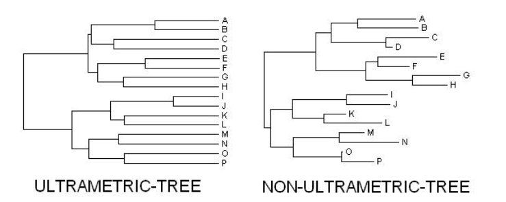
15.4 The start: DNA sequence alignment
15.4.1 DNA sequence aligment
For this course, our start would be a DNA sequence alignment, however phylogenies can be built using any other source of information that contain homologous characters, such as phenotypic characters inherited from the same ancestor, protein sequences, etc.
We start by collecting the DNA sequences of our organisms/individuals of interest, and now we need to make sure that the positions are homologous, which means that they were inherited from the same ancestor, to ensure that they share the same evolutionary history. A way to ensure that our positions are homologous is by aligning our DNA sequences.
There are different ways to produce an alignment from our sequences, and this will depend on the type of data that you have:
- Multiple Sequence Alignment (MSA) can be computed from complete genomes. This can be achieved with MAFFT or Clustal Omega. However, this will be computationally expensive to perform on large genomes.
- Reference based alignment: this consists of aligning your reads to a reference genome, and it was covered during the Practical 4B: Genome mapping.
For large genomic datasets, we often use Single Nucleotide Polymorphims (SNPs) alignments, i.e. alignments that contain only variable genomic positions. This is to reduce the computational time since the variable positions are the most informative for reconstructing phylogenetic trees.
15.4.2 DNA sequence alignment
In this practical session, we will be working with an alignment produced as you learned in the Practical 4B:Genome mapping.
We are going to start by exploring the alignment in MEGA. So open the MEGA desktop application and load the alignment by clicking on File -> Open A File/Session -> Select the snpAligment_session5.fasta.
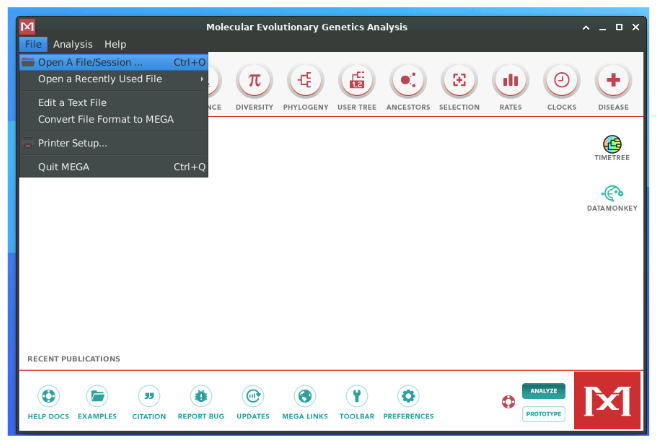
It will you ask what you want to do with the alignment. In MEGA you can also produce an alignment, however, since our sequences are already aligned we will press on Analyze.
Then we will select Nucleotide Sequences since we are working with a DNA alignment. Note that MEGA can also work with Protein Sequences as well as Pairwise Distance Matrix (which we will cover shortly). In the same window, we will change the character for Missing Data to N and click in OK.

A window would open up asking if our alignment contains protein encoding sequences, and we will select No.
If you had protein encoding sequences, you would have selected Yes. This will allow you to treat different positions with different evolutionary modes depending on their codon position. One can do this to take in account that the third codon position can change to different nucleotides without resulting in a different amino acid, while position one and two of the codon are more restricted.
To explore the alignment, you will then click on the box with TA

You will see an alignment containing sequences from the bacterial pathogen Yersinia pestis. Within the alignment, we have our sequences of interest (VLI092, CHC004, KZL002) that date between 5000-2000 years Before Present (BP), and we want to know how they relate to the rest of the Yersinia pestis genomes in the alignment.

What do you think the dots represent?
- They represent positions that are same as the reference
What are the Ns in the sequences?
- They represent positions where we have missing data. We told MEGA to encode missing positions as N
How many sequences are we analysing?
- We are analysing 33 sequences.
15.5 Distance-based phylogenetic methods
Distance-based methods calculate the tree from a pairwise distance matrix. The distances in the pairwise distance matrix can represent either:
- Number of differences between to sequences
- p-distance that is calculated as number of differences / total number of sites
For any of the phylogenetic methods, we can also take into account that different sites may evolve differently depending on their nucleotide composition. To take this into account, you will need to use substitution models. By applying different evolutionary models, one can take into account multiple consecutive mutations as well as different probabilities to observe a specific mutation given the specific character in this position. There are tools that allow you to choose the substitution model that it is more fitting to you specific alignment, such as jModelTest, ModelGenerator, etc.

15.5.1 Calculate a pairwise distance matrix
To calculate a pairwise distance matrix, one will have to check the number of differences between all the possible pair combination between the sequences in the alignment, and in the case of a p-distance normalise the number of differences by the total number of sites. All this differences will be then stored in a matrix.
MEGA also provides a function to calculate Pairwise Distances, for that you will have to click into the Distance symbol, and select Compute Pairwise Distances, the output will be a matrix with all the pairwise distances. This will be the first step you will do if you wanted to compute a distance-based phylogeny with methods such as UPGMA or Neighbour-Joining. We will be covering the second method.
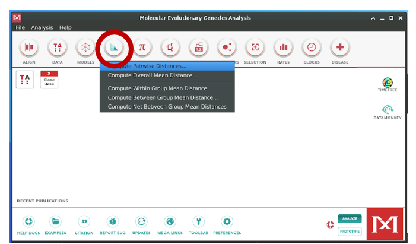
15.5.2 Calculating a Neighbour-Joining tree
In the slide you have an example on how a small Neighbour-Joining (NJ), with 6 taxa is calculated.
In essence, this method will be grouping taxa that have the shortest distance together first, and will be doing this iteratively until all the taxa/sequences included in your alignment have been placed in a tree. Luckily, you won’t have to do this by hand since MEGA allows you to build a NJ tree.
15.5.3 Let’s make our own NJ tree
For that go back to MEGA and click on the Phylogeny symbol and then select Construct Neighbour Joining Tree. In the window that would pop up, you will then chance the Model/Method to p-distance since we want to normalise by the total number of sites shared by sequences. Then press OK and a window with the calculated phylogenetic tree will pop up.
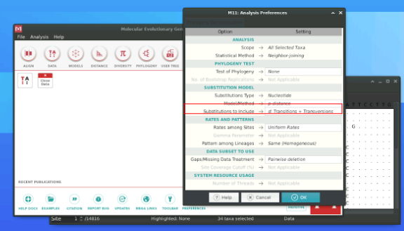
Since the tree is not easily visualised in MEGA, we will export it in newick format (an “standarised” format to write a tree in a computer-readable form) and explore our tree in FigTree. This tool has a better interface for visually manipulating trees and allows us to interact with the phylogenetic tree.
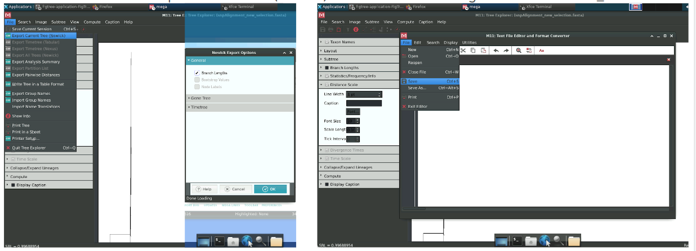
To do that you will click on File, then Export current tree (Newick) and click on Branch Lengths to include those in the newick annotation. When you press OK, a new window with the tree in newick format will pop up and you will then press File -> Save and saved it as NJ_tree.nwk (If you are doing this for your own project, please give your files informative names).
As said above, we will explore own NJ tree in FigTree. Open the software and then open the NJ tree by clicking on File -> Open and selecting the file with the NJ tree NJ_tree.nwk

So, which type of tree is this? Before you answer this question, let me introduce you to another type of trees
15.5.4 Type of trees: Rooted vs Unrooted trees
- An unrooted tree does not contain a root. It displays the relationships between our sequences but not the direction in time. In the example, we can not tell if human or chimpanzee or gorilla are more ancestral to each other.
- A rooted tree does contain a root. This root can be calculated based on the inclusion of an outgroup, a known sequenced to be older than any of the taxa in our tree, or by computational methods that can place the root by various methods, being one of such methods the Mid Point Rooting. A rooted tree represents the relationships and the direction in time. By rooting our example tree with the outgroup, we now can tell that gorilla is ancestral to both human and chimpanzees.
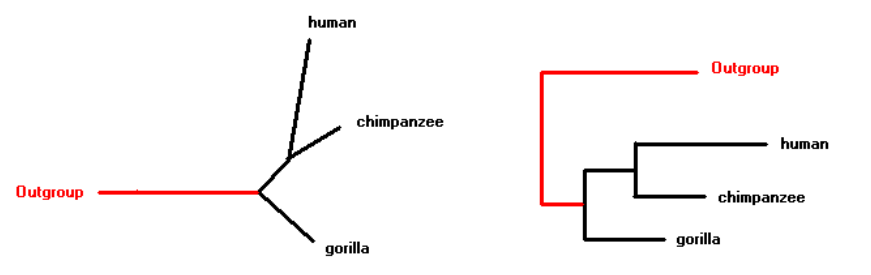 ##### Let’s make our own NJ tree
So if we go back to our question, which type of tree is this?

Even though a root is displayed by default, this is actually an unrooted tree. We know that Yersinia pseudotuberculosis (labelled here as Y. pseudotuberculosis) is an outgroup to Yersinia pestis. You can reroot the tree by selecting Y.pseudotuberculosis and pressing Reroot.
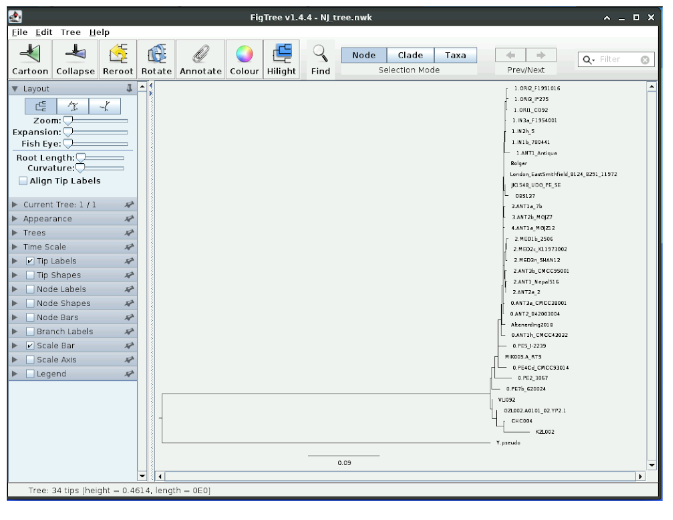
Now we have the correct tree.
How many leaves/tips has our tree?
- That’s right, it is 33, the same number of sequences that was in our original SNP alignment.
Is it an ultrametric tree?
- No, we can see that root to tip distance is different between taxa. The branch lengths in the NJ tree will represent genetic distance between the different taxa.
Where are our taxa of interest? (KZL002, GZL002, CHC004 and VLI092)
- They all fall ancestral to the rest of Yersinia pestis in this tree.
Do they form a clade?
- All the genomes have a common ancestor and form a single branch, meaning that they form a clade.
Which type of clade?
- To answer this question, let’s look at what types of clades we can have in a phylogenetic tree
15.5.5 Types of Clades
- A Monophyletic clade is a group of taxa that contain all the taxa that share a common ancestor.
- A Paraphyletic clade is a group of taxa including all the taxa with a common recent ancestor except one or more taxa. In the example, since A is missing from the clade selected, it won’t be anymore a paraphyletic clade rather than a monophyletic. Another common example of paraphyletic clade would be selecting all the reptiles but excluding birds.
- A Polyphyletic clade is a group of taxa from different monophyletic clades.

15.5.6 Lets make our own NJ tree
Now regarding our question, which type of clade form KZL002, GZL002, CHC004 and VLI092?
Since they all share a common ancestor,they form a monophyletic clade.
Until now we have learned how to explore a SNP alignment, the different part of the a phylogenetic tree and how to make a NJ tree. The NJ tree is based on pairwise distances, which is one of the simplest algorithms to build a tree and now you will see more complex algorithms for phylogenetic tree building.

15.6 Character-based phylogenetic methods: maximum parsimony and probabilistic approaches
Character-based methods are not based on pairwise distances but rather model the complete evolution of each character (e.g. DNA nucleotides at each position) along the phylogenetic tree.
One of these methods is maximum parsimony and it consists in choosing the tree that underlies an evolutionary history with the least number of character changes.


Other types of character-based methods which are more commonly used today are probabilistic methods. In general, these are statistical techniques that are based on probabilistic models under which the data that we observe is generated following a probability distribution depending on a set of parameters which we want to estimate.
In a phylogenetic probabilistic model, the data is the sequence alignment and the parameters, are the substitution matrix and the phylogenetic tree. The probability of the data given the model parameters is called the likelihood.
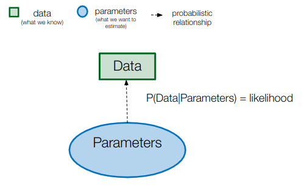
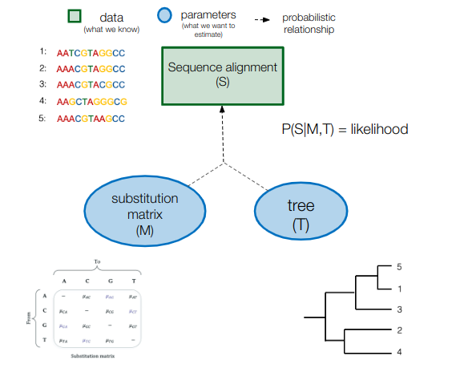
15.6.1 Maximum likelihood estimation and bootstrapping
One way we can make inferences from a probabilistic model is by finding the combination of parameters which maximises the likelihood. These parameter values are called maximum likelihood (ML) estimates. We are usually not able to compute the likelihood value for all possible combinations of parameters and have to rely on heuristic algorithms to find the maximum likelihood estimates.
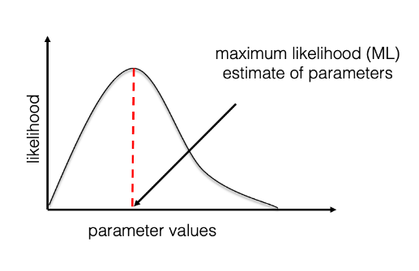
The Maximum likelihood estimates are point estimates, i.e. single parameter values (for example, a tree), which does not allow to measure uncertainty. A classic method to measure the uncertainty of ML tree estimates is bootstrapping, which consists in repeatedly disturbing the alignment by masking sites from it and estimating a tree from each of these bootstrap alignments.
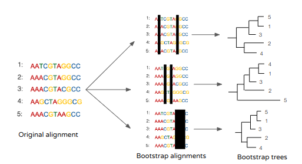
For each clade in the ML tree, a bootstrap support value is computed which corresponds to the proportion of bootstrap trees containing the clade. This gives an indication of how robustly the clade is supported by the data (i.e. whether it holds even after disturbing the dataset). Bootstrapping can be used to measure the topology uncertainty of trees estimated with any inference method.
Here is a command to estimate an ML phylogenetic tree using RAxML (you may find the list of parameters in the RAxML manual):
raxmlHPC-PTHREADS -m GTRGAMMA -T 3 -f a -x 12345 -p 12345 -N autoMRE -s snpAlignment_session5.fasta -n full_dataset.treOnce the analysis has been completed, you can open the tree using Figtree (RAxML_bipartitions… file, change “label” to “bootstrap support” at the prompt).
The tree estimated using this model is a substitution tree (branch lengths represent genetic distances in subst./site), and it is not oriented in time: this is an unrooted tree (displayed with a random root in Figtree). You can reroot the tree in Figtree using Y. pseudotuberculosis as an outgroup (click on the branch leading to Y. pseudo and then “Reroot”).
Where do our genomes of interest from the LNBA period fall (VLI092, GZL002, CHC004, KZL002), compared to the rest of Yersinia pestis diversity? Is that placement well-supported? (look at the bootstrap support value: click on the “Node Labels” box and open the drop-down menu, change “Node ages” to “bootstrap support”)
You can notice that the phylogeny is difficult to visualize due to the long branch leading to Y. pseudotuberculosis. Having a very distant outgroup can also have deleterious effects on the estimated phylogeny (due to long branch attraction). We can construct a new phylogeny after removing the outgroup (go back to the alignment in mega, unclick Y.pseudotuberculosis, and export in fasta format), and then reroot the tree based on our previous knowledge: place the root on the branch leading to the LNBA genomes.
Then, export the rooted tree: file > export trees > “save as currently displayed”.
15.6.2 Estimating a time-tree using Bayesian phylogenetics
Now, we will try to use reconstruct a phylogeny in which the branch lengths do not represent a number of mutations but instead represent the time of evolution. To do so, we will use the sample ages (C14 dates) to calibrate the tree in time. This assumes a molecular clock hypothesis in which substitutions occur at a rate that is relatively constant in time so that the time of evolution can be estimated based on the number of substitutions.
15.6.2.1 Temporal signal testing
It is a good practice to assess if the genetic sequences that we analyse do indeed behave like molecular clocks before trying to estimate a time tree. A classic test to do this is called root-to-tip regression, which consists in verifying that the oldest a sequence is, the closer it should be to the root because there was less time for mutations to accumulate before this sequence was sampled. The correlation between sample age and distance to the root (root-to-tip regression) can be assessed using a rooted substitution tree and the program tempest:
- open tempest and load the re-rooted ML tree that we produced previously
- click on “import dates” in the “sample dates” tab, select the sample_age.txt file, and then change to “dates specified as years before the present”
- look at the root-to-tip regression: is there a positive correlation?
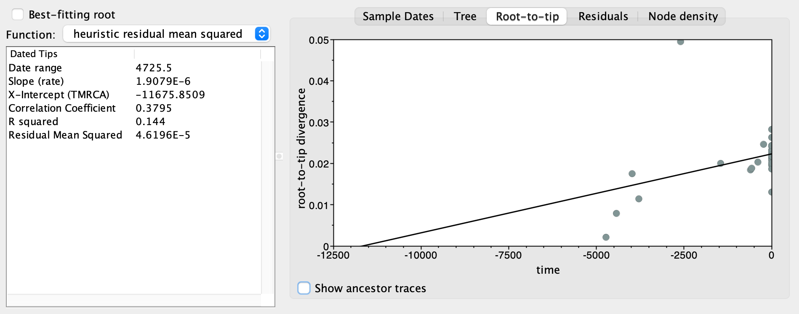
15.6.2.2 Bayesian phylogenetic inference using BEAST2
We will estimate a time tree from our alignment using Bayesian inference instead of maximum likelihood.
Bayesian inference is a type of inference which is based on a probability distribution that is different from the likelihood: the posterior probability. The posterior probability is the probability of the parameters given the data. The posterior distribution is easier to interpret than the likelihood because it contains all the information about the parameters: point estimates such as the median or the mean can be directly estimated from it, but also percentile intervals which can be used to measure uncertainty.
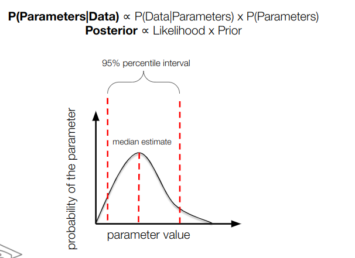
The Bayes theorem tells us that is proportional to the product of the likelihood and the “prior” probability of the data:

Therefore, for Bayesian inference, we need to complement our probabilistic model with prior distributions for all the parameters. Because we want to estimate a time tree, we also add another parameter: the molecular clock (average substitution rate in time units).
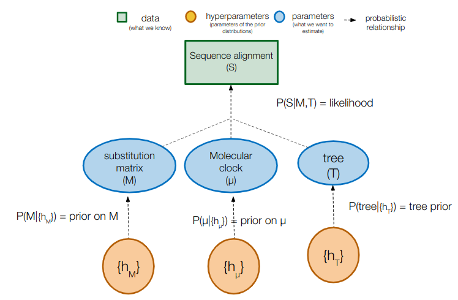
To characterize the full posterior distribution of each parameter, we would need in theory to compute the posterior probability for each possible combination of parameters. This is impossible, and we will instead use an algorithm called Markov chain Monte Carlo (MCMC) to approximate the posterior distribution. The MCMC is an algorithm which iteratively samples values of the parameters from the posterior distribution. Therefore, if the MCMC has run long enough, the (marginal) posterior distribution of the parameters can be approximated by a histogram of the sampled values.

The different components of the BEAST2 analysis can be set up in the program BEAUti:

- load the alignment in the “Partitions” tab
- set the sampling dates in the “Tip dates” tab
- choose the substitution model in the “Site model” tab
- choose the molecular clock model in the “Clock model” tab
- choose the prior distribution of parameters in the “Priors” tab
- set up the MCMC in the “MCMC” tab
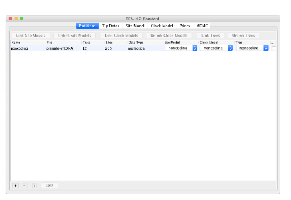  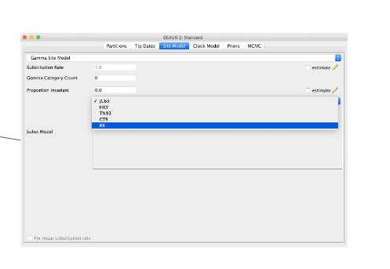
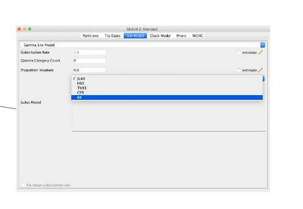 

The “taming the beast” website has great tutorials to learn setting a BEAST2 analysis. In particular, the “Introduction to BEAST2”, “Prior selection” and “Time-stamped data” are good starts.
Try running an analysis on the alignment without outgroup using the following:
- don’t forget to specify the sample ages correctly
- use a GTR substitution matrix with a Gamma site model and 4 Gamma categories
- use a relaxed clock lognormal model with an initial value of 1E-4
- use a Bayesian Skyline Coalescent tree prior
- change the mean clock prior to a uniform distribution between 1E-6 and 1E-3 subst/site/year
- use 300M iterations for the MCMC chain, and log the parameters and trees each 10,000th iteration
Once the analysis is completed, assess the posterior distribution sampling and parameter estimates by loading the obtained log file into Tracer
First, look at the trace of the posterior to check if the MCMC has passed the burn-in phase, and if you have remove all burn-in iterations
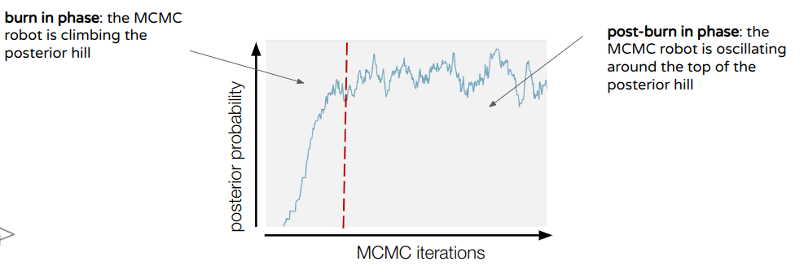
If so you can look at the trace and effective sample size (ESS) value of all parameters, to check that the MCMC has run long enough. The traces should look (more or less) like a “hairy caterpillar”, and a rule of thumb is that all ESS values should be above 200. If this is not the case, you should run the MCMC longer (BEAST2 has a -resume option that you can use to extend the MCMC sampling without starting everything from the beginning).
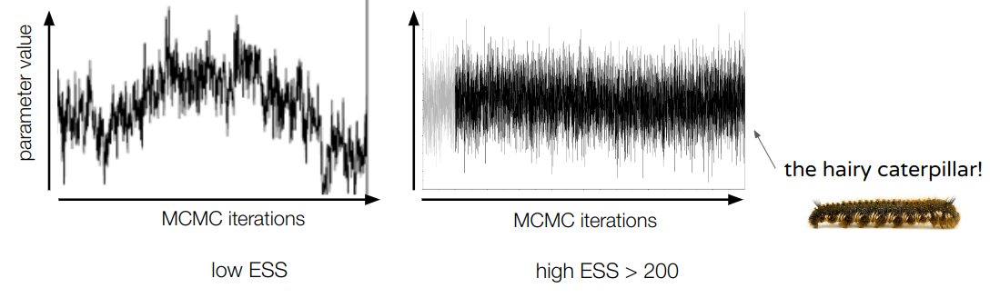
You can then look at the estimates of your parameter in the top-right panel (mean, median, 95% HPD interval, …). Note that these are marginal estimates, i.e. integrated over all other parameters.
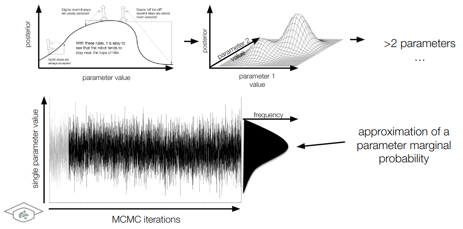
What is your estimate of the substitution (mean clock) rate?
You can then generate a maximum clade credibility (MCC) tree using treeAnnotator.

What is your mean estimate for the age of the common ancestor of all Yersinia pestis strains? To which parameter (displayed in beauti) does this corresponds?